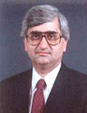

| SALMAN KHURSHID (b. 1953, Aligarh) studied at St. Stephens College (Delhi University) and St. Edmund Hall College (Oxford). He then taught Law at Trinity College, Oxford. A renowned legal thinker and a practicing senior advocate on the Supreme Court of India, he is known for his deep interest in a variety of fields. |
|  |